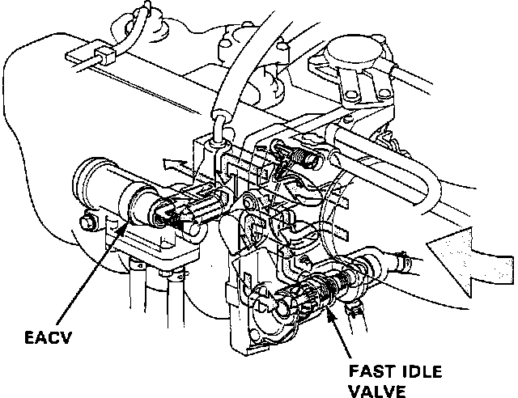
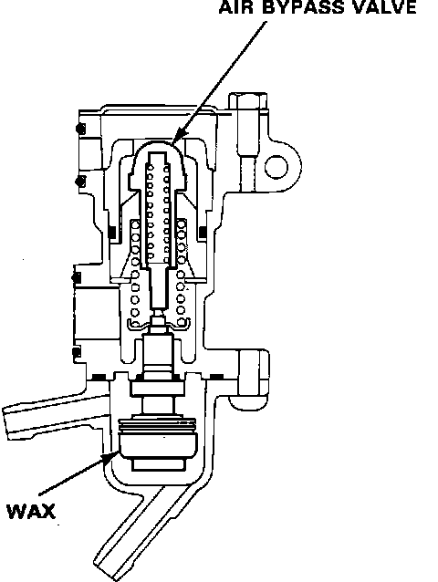

Auxiliary Air Valve (Idle Speed): Description and Operation
Fast Idle Valve Location:

Fast Idle Valve Cutaway:

The Fast Idle Valve is located on the bottom side of the intake manifold inlet under the throttle body assembly. It's function is to prevent erratic running when the engine is warming up by raising the idle speed. The Fast Idle Valve is controlled by a thermowax plunger. When the engine is cold, the engine coolant surrounding the thermowax contracts the plunger, allowing additional air to be bypassed around the throttle valve into the intake manifold so that the engine idles faster. As the engine reaches normal operating temperature, the thermowax expands, closing the valve and reducing the amount of air bypassing into the intake manifold.